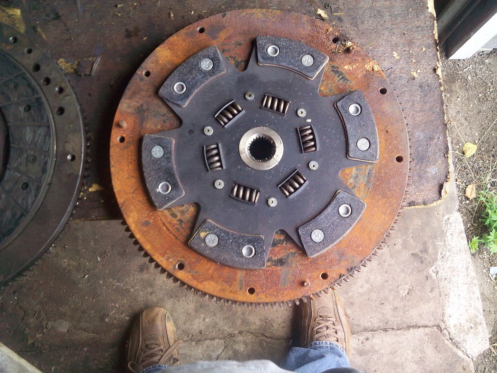

-
[quote]zmech wrote:As far as I know, the Z33 PP will not bolt to 87-89T flywheel; the bolt patterns are different. It will bolt to the 240mm flywheel though. You could re-drill the flywheel (which is what the Z32TT guys do to use the Z33 PP) but it's easier for us to just find a 240mm flywheel with the correct pattern to begin with.Originally posted by Jason84NA2T -
Im probably going with a Clutchmasters stg4 6 puck. I have heard a lot of good things about them. Anybody use one?Bolt on, fast, z31. You can only pick two.
Old weaksauce numbers: 391hp/433tq

-
Finally dug out all the different crap and just got my cam ready so let's get to the visual confirmation part of this thread.
INFO: Left -Right
Z31 240mm SSG Lightweight Flywheel and Red "Performance" Pressure Plate and Disc
Z31 240mm 1987 OEM NA Flywheel and OEM Pressure Plate and Disc
Z32 ???mm 1990 OEM NA Flywheel and OEM Pressure Plate (Lost the clutch?)

"Performance" Z31
OEM Z31
OEM Z32
Z32 PP on Z31 Flywheel Good

Z31 "Performance" PP on Z32 Flywheel Good
Wear patter of OEM Z32 NA clutch disc
Z31 clutch Disc and Z32 NA Flywheel perfect fit

Z31 6 puck and Z31 SSG flywheel.
I'll have the Twin Turbo Disk, Pressure Plate and Flywheel for comparison in the near future.
-
anyone ever try the white bunny?
Using a D21-pickup flywheel and clutch on the KA24DE is referred to as a "White Bunny' setup, due to the guy who figured it out and shared the info.
A stock replacement D21 clutch is bigger, and can handle something like ~400ft/lbs..all for $175 for both flywheel and clutch. -
[quote]Jason84NA2T wrote: [quote=zmech]on the z31 NA flywheel, can you fit any z33 PP? or just a single disc?Originally posted by Jason84NA2T
so what about those multi-disc?, do they need a special flywheel, or would the multi-disc it fit the stock or the stock/or aluminum aftermarket? -
The z33 multi-disc setups I have seen use a custom flywheel, which will not work on a Z31 due to us having 6 bolts to the crank vs 8, I believe the flywheel also has different spacing from the face on the rear of the crank. If they used multiple discs with a stock 350z flywheel, then I don't see why it would not work with a Z31 flywheel.wally1589 wrote: on the z31 NA flywheel, can you fit any z33 PP? or just a single disc?
so what about those multi-disc?, do they need a special flywheel, or would the multi-disc it fit the stock or the stock/or aluminum aftermarket? -
[quote]Jason84NA2T wrote:and they are $2000+ :-/Originally posted by wally1589 -
About to get a new clutch setup.
Just afraid of buying the wrong thing.....Correct me if wrong please.....
350Z pressure plate and disc will direct bolt into my OEM 1985 Z31 Turbo with T5 transmission and stock for that year flywheel ? -
YES, the pressure plate will bolt right up, no issues
Unsure if the disk will work, spline count is the same but it may be a 250mm disk which won't play nice with the 240mm flywheel.
-
thx gregmatic.Gregmatic wrote: YES, the pressure plate will bolt right up, no issues
Unsure if the disk will work, spline count is the same but it may be a 250mm disk which won't play nice with the 240mm flywheel.
I "think" I read in another thread that for whatever reason, the 250mm disk fits flywheels up to 87.
But I'm trying to get confirmation. -
i had the guys at DXD add a band for me just to solve thatNearly all men can stand adversity, but if you want to test a mans character make him a moderator. -
I have no idea what you mean by that.aceman wrote: i had the guys at DXD add a band for me just to solve that
Can you explain that?
So it seems you're saying, no it won't fit without modification? -
was supposed to be a quote there somewhere, but you can increase pedal feel by adding bands to the pressure plate. It is a byproduct of increasing clamp load.Nearly all men can stand adversity, but if you want to test a mans character make him a moderator. -
LOL.....aceman wrote: was supposed to be a quote there somewhere, but you can increase pedal feel by adding bands to the pressure plate. It is a byproduct of increasing clamp load.
So adding "bands" make the pedal feel firmer. ok.
still ambiguity....
So, can the 350 Clutch and Pressure Plate fit into a 1985 Turbo 300zx or does it REQUIRE modification ?
:nanan?re -
Ok found this thread.....
http://z31performance.com/forum/…hp?f=3&t=22087
But after reading it all, only one guy says "Yes".....
All other posts are a lot of techno talk and involves cars other than the 85 T.
Solution.....
I'll just buy a 350z PP and disc.....a 300ZX TT throw out bearing and give it a try.
As long as I can return it it's just a matter of a little R&R

Copyright © 2006–. All rights reserved. Privacy Policy